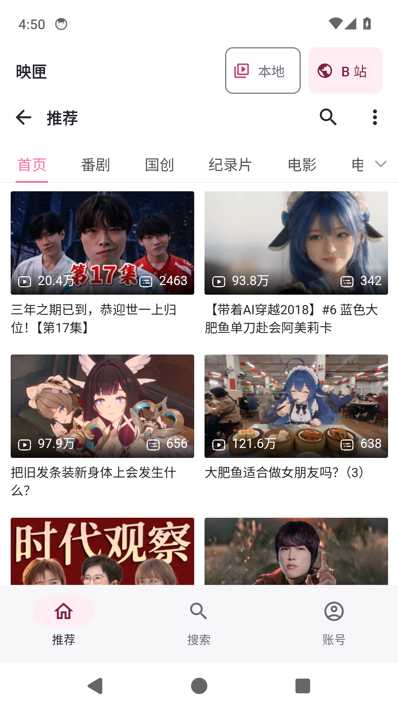
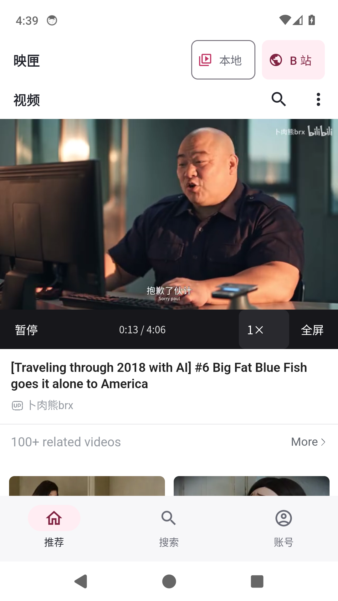
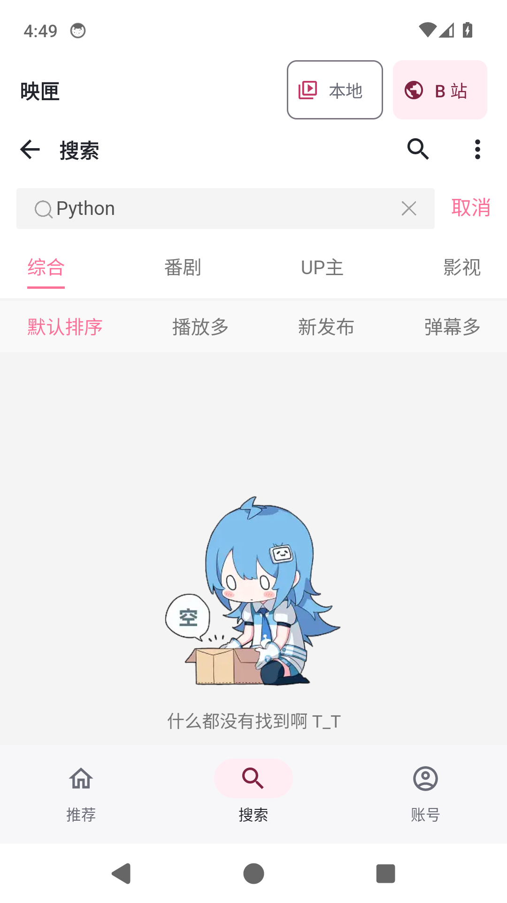
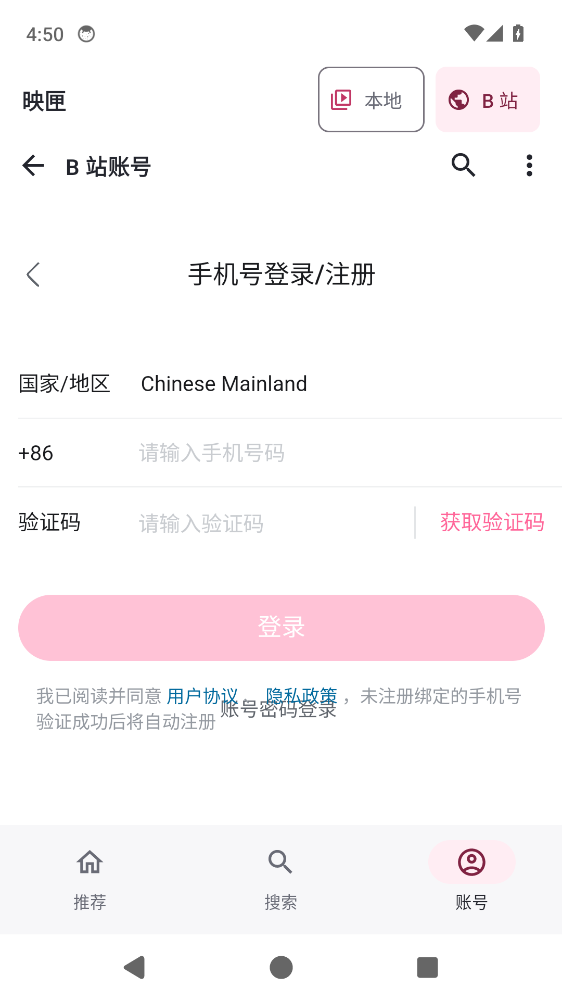

点开视频，直接观看。
推荐、搜索、账号融入应用；播放控件回到原视频区域。修复重复的链接提示，移除二层播放面板。保留本地播放、真实文件夹、移动与删除。
与旧版同签名，可直接覆盖安装，不要先卸载。以下为本轮 1.2 开发及正式包在 Android 14 模拟器的截图，播放和全屏画面取自候选包实播；部分视频详情由官网返回英文内容。未做真机或完整账号登录验收。




推荐、搜索、账号融入应用；播放控件回到原视频区域。修复重复的链接提示，移除二层播放面板。保留本地播放、真实文件夹、移动与删除。
与旧版同签名，可直接覆盖安装，不要先卸载。以下为本轮 1.2 开发及正式包在 Android 14 模拟器的截图，播放和全屏画面取自候选包实播；部分视频详情由官网返回英文内容。未做真机或完整账号登录验收。



